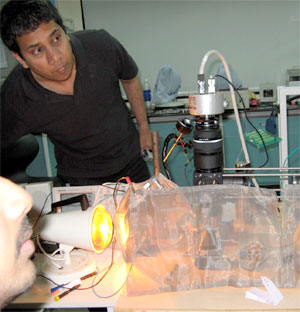

News Archives : 2009 : Optogenetics in India
by Abhinav Grama
September 1, 2009
Prof. Murthy modifying the pattern of illumination onto a mouse brain.
What do you get when you put two Harvard professors in India?
Wrong answer: A Nature paper on the non-linear dynamics of snake charming.
Right answer: Crazy and fun science!
As a part of the Harvard-Bangalore Science Initiative (HSBI), Prof. Venkatesh Murthy's brainchild, a rigorous summer course on the exciting and upcoming field of Optogenetics was organized at the National Center for Biological Sciences in Bangalore (NCBS), India. Profs. Venki Murthy and Florian Engert were joined by Dr. Dinu F Albeanu, who graduated from Prof. Murthy's lab in 2008 and is now a fellow at Cold Spring Harbor Laboratory, and by several faculty members from NCBS, including Profs. Sumantra Chattarjee, Vijayraghavan, Satyajit Mayor and Sudipto Maiti.
To study brain activity, scientists generally stick electrodes into neuronal tissue and record electrical signals they pick up. There are a few disadvantages to this strategy: most of the time, the recording is done in a blind fashion i.e., there is no targeting of a particular cell type to assess its function in a neuronal circuit and traditional techniques are quite invasive. This is where the rapidly developing field of Optogenetics is pushing experimental neuroscience by helping it overcome these challenges.
The term Optogenetics was coined for the latest tools in neuroscience, which enable researchers to control or read activity in neurons that express specifically engineered proteins that are sensitive to light. When the expression of these proteins is driven by promoters specific to certain neuronal cell types a high degree of specificity in the control or monitoring of neuronal activity can be achieved.
The Optogenetics course ran from 6th-18th of July in the beautiful campus of NCBS, Bangalore. The participants were a mix of graduate students from several leading institutes of scientific and medical research in India (NCBS, the Indian Institute of Science, National Institute of Mental Health and neurosciences, and the All India Institute of Medical Science). A typical day in the course was structured to have an in-depth lecture in the morning session, followed by a laboratory session in the afternoon and a paper discussion section in the evening.
Dr. Albeanu kicked-off the proceedings with a lecture in basic optics and microscopy, which the students appreciated immensely. This was followed by Dr. Maiti's talk on multiphoton microscopy, a technique that uses longer wavelength light to achieve non-linear excitation of fluorescent molecules. After these talks on basic and advanced optics, the students were gung-ho to get their hands dirty in the laboratory. With guidance from the instructors, the students first assembled a compound microscope, but then went on to make use of their tremendous creativity and courage to convert this into a confocal laser scanning microscope. One key component that was missing turned out to be a galvanometric mirror for scanning, which was promptly fabricated out of a piece of aluminium foil and a cassette player.
The transition from optics to genetics was made by Prof. Murthy, who spoke about all the tools developed in the past decade to optically control neuronal activity, the most famous one being channelrhodopsin (ChR2), a light gated cation-specific channel. There were also talks given by the other participating faculty about how optogenetic tools are being applied in different model systems to ask intriguing questions. These talks were bolstered by demonstrations of the use of optogenetic tools in the laboratory. In one such demonstration, ChR2 was expressed in the sweet taste receptors of a fly. When blue light was shone on the fly, its sweet taste receptors were giving the signals of something sweet being in the vicinity of its mouth. It immediately thrust out its proboscis, thus giving the students the satisfaction of making light taste sweet! There were also other demonstrations with worms, mouse brain slices and zebrafish.
As a grand finale to the laboratory component of the course, Dr. Albeanu and the students built a macroscope, consisting of a CCD camera and a combination of lenses one would normally use for photography. This was fitted with a projection system so as to project at the focal plane arbitrary patterns drawn on a computer. Thus patterns of blue light were used to stimulate the olfactory bulb of a transgenic mouse expressing ChR2 in its glomeruli.
The course was not only academically rigorous but also very entertaining for everyone participating. Apart from exploring the local cuisines and culture, Prof. Engert and Dr. Albeanu went on a trekking trip with students from the course in the lush hills of Wayanad, in the state of Kerala. The highlights of the trekking trip were Prof. Engert entertaining the students with his renditions of opera pieces and teaching them how to play poker. In a nail-biting overnight poker session that lasted till nine in the morning he managed to lose a lot of money to a graduate student he had just taught how to play!
The feedback from the students was outstanding, with comments such as: “The course was one of its kind in India”, and “Fantastic lectures, good lab exercises, fantastic interactions”. Engert and Murthy are looking forward to the next year already!